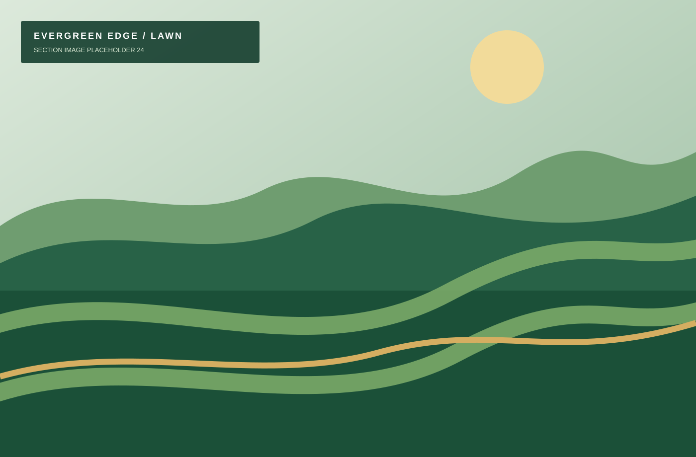

Palm Beach County project portfolio
Completed projects, one detail at a time
Browse illustrative examples of lawn transformations, cleanup, sod, mulch, and commercial maintenance work.

Palm Beach County project portfolio
Browse illustrative examples of lawn transformations, cleanup, sod, mulch, and commercial maintenance work.
Free Palm Beach County estimates
Tell us what needs attention, and we’ll recommend a practical next step.